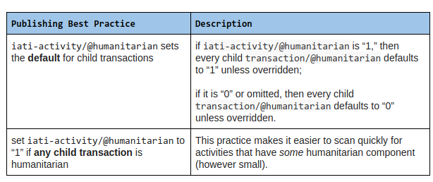

Thanks, Steven – that’s a great table for organisations consuming IATI data. For organisations producing IATI data (as we discussed after you posted this), we would want to discourage some of these combinations, especially given the standard’s guidance that “1” should be set at the activity level if one or more transactions are humanitarian.
2 Likes
Thanks @David_Megginson
OK - if we agree that there are many combinations that anyone trying to process IATI data might have to consider, we can now look at (and you’ve said this already!) what we would consider as best practice amongst publishers:
(NB: I’ve a google doc with this, if anyone finds it easier to comment there)
If we consider these two publishing conditions to be acceptable:

We then have a reduced number of best practice combinations of the humanitarian flag:

Is this what we want ?
Moving on, it seems there’s two main actions:
- Revise the description of the humanitarian flag (as originally discussed) - consider this as bug fix of the standard
- Publish this Best Practice guidance for the community, and link to it from the documentation
I hope this gets us to a satisfactory place! It seems a real lesson in terms of introducing a relatively simple attribute to the standard, but then learning from the reality of implementation.
@stevieflow I am a little unsure what the goal is here - I think your intention is to remove the “or partially” from the description “indicate that this activity relates entirely or partially to humanitarian aid”?
I am not sure that is a good idea. It seems as though it would rule out @Wendy’s point 3 (quoted below). I have argued above that this is important because:
a) a single project shouldn’t be split into artificial components, because it makes reconciliation of project units more difficult and
b) you may know that an activity is partially related to humanitarian aid, but not the precise amount, and your accounting system may not (I guess, often will not) be able to tell you precise amounts at the transaction level. I think the use of humanitarian DAC codes would be a better way of roughly stating the amount of aid that is humanitarian in nature.
Thanks. No - the intention is along the lines of
Have I made it even more unclear? Oh no!
1 Like
Have we considered changing this to non-boolean to make it simpler?
Hi @matmaxgeds
Understood. I think this was part of my earlier confusion:
But - It seems if we sharpen the description:
… then that might help…
I agree (and it should remain a Boolean)
I don’t follow why it should remain a boolean - did I miss the reasoning somewhere, or is it just a reluctance to change the standard?
Unless we change it, it seems to me that we cannot calculate a figure for the share of an activity that is purely humanitarian support without relying on the sector codes being the DAC sectors, therefore making them mandatory for reporting humanitarian support (or inferring it from the organisations involved), neither of which seem like the right/IATI way of doing things.
Correct, 'cos in the real world an exact calculation is often not possible. This is corroborated by Mark, Wendy and Yohanna above.
That is what a separate ‘partial’ flag is for, leaving the ‘humanitarian = 1’, and ‘humanitarian = 0’ for when you can tell, and is why moving away from a boolean would help the accuracy.
Matt, I don’t believe (based on feedback from humanitarian folks) that we can get to the accuracy you aspire to.
I do think we should correct the guidance, as we’ve been discussing for a long time now.
1 Like
Thanks Yohanna, if it is a bridge, or PFM, then it is clearly not humanitarian, if it is emergency food aid, then it clearly is - for everything else, use the ‘partial’ marker. I agree it is sometimes not clear (I am in Somalia right now and discussed coding with UNOCHA and others on Tuesday) but this doesn’t mean that it often isn’t clear. I will give it up now, but this seems like the same situation as the DAC markers i.e. there are clearly yes bits, clearly not bits, and partial bits - hence the need for 0, 1 and 2, not a boolean, because if the DAC markers had one called ‘principally or maybe significant but not principal’ it would be silly and far less use. This idea about if it is a hard call to make then we should bundle two categories together seems a completely false line of reasoning, that is exactly why we need a category to reflect those hard calls so that the other categories mean more.
Sorry for slow reply @stevieflow - yes, looks good! I think I was just confused by the language in the table in your comment but I get what you’re trying to do now.
And @matmaxgeds, I think if you want to (and are able to) state a specific percentage that is humanitarian then you can use the DAC humanitarian sector codes and percentages.
What if you are not using the DAC sector vocab, perhaps using the humanitarian clusters as the sector vocab?
1 Like
I am reviving this thread to ask where we’re at regarding the correction to the guidance on humanitarian data, as discussed at length above (and in other threads related to humanitarian data)?
The reason I ask is because the 2016 document that presented guidance that pretty much everyone agrees is wrong is still online and misleading people (point in case: a colleague just sent it to me).
It would be great if the @IATI-techteam could update the guidance in light of the feedback that has been provided since its publication; if this is not feasible, it would be better to remove it for the time being.